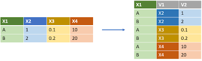
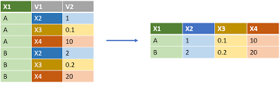

Chapitre 8 Tidy data
Pour illustrer ce paragraphe, on considére les données suivantes : on observe pour 3 pays (Afghanistan, Brazil et Chine) sur 2 années consécutives (1999 et 2000), la taille de la population ainsi que le nombre de cas de tuberculoses observés. On va voir qu’on peut utiliser différentes tables pour présenter ces données et parmi ces différentes possibilités, on aura intérêt à en utiliser une plutôt que les autres. Pour charger ces données, on va installer le package DSR accessible depuis github. En effet, il est possible de récupérer sur github des packages qui sont en cours de développement et qui n’ont pas encore passés le processus de validation pour être un package officiel du CRAN :
devtools::install_github("garrettgman/DSR")On pourrait traduire tidy data par données rangées en opposition à messy data, données désordonnées. Ce courant de tidy data vient encore de Hadley Wickham (voir article https://www.jstatsoft.org/article/view/v059i10 ou encore https://r4ds.had.co.nz/tidy-data.html) qui part du principe suivant qui peut paraître évident, mais selon les situations, ce n’est pas toujours le cas :
Une variable doit être rangée dans une colonne,
Un individu est rangé dans une ligne,
On place les valeurs observées dans les bonnes cases.
On présente ici une façon de présenter les données tidy :
DSR::table1## # A tibble: 6 x 4
## country year cases population
## <fct> <int> <int> <int>
## 1 Afghanistan 1999 745 19987071
## 2 Afghanistan 2000 2666 20595360
## 3 Brazil 1999 37737 172006362
## 4 Brazil 2000 80488 174504898
## 5 China 1999 212258 1272915272
## 6 China 2000 213766 1280428583Au contraire, dans les données messy, on trouve en général une de ces situations :
le nom des colonnes sont des valeurs et pas des noms,
Plusieurs variables sont stockées dans une même colonne, c’est le cas du jeu de données suivant.
DSR::table3## # A tibble: 6 x 3
## country year rate
## <fct> <int> <chr>
## 1 Afghanistan 1999 745/19987071
## 2 Afghanistan 2000 2666/20595360
## 3 Brazil 1999 37737/172006362
## 4 Brazil 2000 80488/174504898
## 5 China 1999 212258/1272915272
## 6 China 2000 213766/1280428583- Les variables sont à la fois présentes dans les lignes et les colonnes, c’est le cas du jeu de données suivant où constate que la colonne key contient le nom des deux variables population et cases, qu’il semblerait judiciable de présenter plutôt en colonnes.
DSR::table2## # A tibble: 12 x 4
## country year key value
## <fct> <int> <fct> <int>
## 1 Afghanistan 1999 cases 745
## 2 Afghanistan 1999 population 19987071
## 3 Afghanistan 2000 cases 2666
## 4 Afghanistan 2000 population 20595360
## 5 Brazil 1999 cases 37737
## 6 Brazil 1999 population 172006362
## 7 Brazil 2000 cases 80488
## 8 Brazil 2000 population 174504898
## 9 China 1999 cases 212258
## 10 China 1999 population 1272915272
## 11 China 2000 cases 213766
## 12 China 2000 population 1280428583- Les valeurs sont stockées dans plusieurs tables. C’est le cas de ces deux tables (une contenant les informations sur la population, l’autre sur le nombre de cas de tuberculoses) qui auraient pu être regroupées en une seule table
DSR::table4## # A tibble: 3 x 3
## country `1999` `2000`
## <fct> <int> <int>
## 1 Afghanistan 745 2666
## 2 Brazil 37737 80488
## 3 China 212258 213766DSR::table5## # A tibble: 3 x 3
## country `1999` `2000`
## <fct> <int> <int>
## 1 Afghanistan 19987071 20595360
## 2 Brazil 172006362 174504898
## 3 China 1272915272 1280428583On va présenter ici les fonctions principales du package tidyr (ce package fait partie de la bibliothèque tidyverse) qui permettent de passer d’un format messy à un format tidy ou inversement.
8.1 La fonction pivot_longer() : transformer des colonnes en lignes
Cette fonction permet de représenter en 1 seul colonne (et d’ajouter une colonne correspondant à une variable qualitative où les modalités sont le nom des variables initiales), une variable contenue à l’origine dans plusieurs colonnes.

L’argument cols indique les variables à transformer en ligne, l’argument names_to correspond au nom donné à la variable contenant les nouvelles modalités (le nom des variables) et l’argument values_to correspond au nom de la colonne contenant les valeurs qui ont été transformées de colonnes en lignes.
pivot_longer(DSR::table4,
cols = c("1999", "2000"),
names_to = "years",
values_to = "cases")## # A tibble: 6 x 3
## country years cases
## <fct> <chr> <int>
## 1 Afghanistan 1999 745
## 2 Afghanistan 2000 2666
## 3 Brazil 1999 37737
## 4 Brazil 2000 80488
## 5 China 1999 212258
## 6 China 2000 213766Avant pivot_longer(), il était possible d’utiliser la fonction gather():
gather(DSR::table4, "year", "cases", 2:3)## # A tibble: 6 x 3
## country year cases
## <fct> <chr> <int>
## 1 Afghanistan 1999 745
## 2 Brazil 1999 37737
## 3 China 1999 212258
## 4 Afghanistan 2000 2666
## 5 Brazil 2000 80488
## 6 China 2000 213766Avant toutes ces fonctions, il aurait fallu exécuter ce genre de commandes où l’opération mathématique consiste à transformer une matrice en un vecteur.
data.frame(
country = rep(DSR::table4$country, times = 2),
year = rep(c("1999", "2000"), each = nrow(DSR::table4)),
cases = as.vector(as.matrix(DSR::table4[ , c("1999", "2000")]))
)## country year cases
## 1 Afghanistan 1999 745
## 2 Brazil 1999 37737
## 3 China 1999 212258
## 4 Afghanistan 2000 2666
## 5 Brazil 2000 80488
## 6 China 2000 2137668.2 La fonction pivot_wider() : transformer des lignes en colonnes
Cette fonction permet de re-distribuer les valeurs d’une colonne qui contenait l’information de plusieurs variables, en plusieurs colonnes où chaque colonne correspond à une variable.

L’argument names_from correspond au nom de la colonne qui contient le nom des variables, et l’argument values_from correspond au nom de la colonne qui contient les valeurs à re-distribuer :
pivot_wider(DSR::table2, names_from = key,
values_from = value)## # A tibble: 6 x 4
## country year cases population
## <fct> <int> <int> <int>
## 1 Afghanistan 1999 745 19987071
## 2 Afghanistan 2000 2666 20595360
## 3 Brazil 1999 37737 172006362
## 4 Brazil 2000 80488 174504898
## 5 China 1999 212258 1272915272
## 6 China 2000 213766 1280428583Avant pivot_wider(), il était possible d’utiliser la fonction spread()
spread(DSR::table2, key, value)## # A tibble: 6 x 4
## country year cases population
## <fct> <int> <int> <int>
## 1 Afghanistan 1999 745 19987071
## 2 Afghanistan 2000 2666 20595360
## 3 Brazil 1999 37737 172006362
## 4 Brazil 2000 80488 174504898
## 5 China 1999 212258 1272915272
## 6 China 2000 213766 1280428583Avant la création de ces fonctions, il aurait fallu utiliser la fonction split() et merge():
sp_DSR <- split(DSR::table2[, c(1, 2, 4)], DSR::table2[, 3])
names(sp_DSR$cases)[3] <- "cases"
names(sp_DSR$population)[3] <- "population"
merge(sp_DSR$cases, sp_DSR$population,
by.x = c("country", "year"),
by.y = c("country", "year"),)## country year cases population
## 1 Afghanistan 1999 745 19987071
## 2 Afghanistan 2000 2666 20595360
## 3 Brazil 1999 37737 172006362
## 4 Brazil 2000 80488 174504898
## 5 China 1999 212258 1272915272
## 6 China 2000 213766 12804285838.2.1 La fonction separate()
Cette fonction permet de séparer une colonne en deux variables dès qu’elle détecte un caractère de séparation. Par exemple, pour spliter la colonne rate de la table3.
separate(table3, rate, into = c("cases", "population"))## # A tibble: 6 x 4
## country year cases population
## <chr> <int> <chr> <chr>
## 1 Afghanistan 1999 745 19987071
## 2 Afghanistan 2000 2666 20595360
## 3 Brazil 1999 37737 172006362
## 4 Brazil 2000 80488 174504898
## 5 China 1999 212258 1272915272
## 6 China 2000 213766 12804285838.2.2 La fonction unite()
Cette fonction permet de faire l’opération inverse de separate(). Elle permet de concaténer deux variables. Le résultat est proche de celui de la fonction paste().
unite(DSR::table1, col = "rate",
cases, population, sep = "/")## # A tibble: 6 x 3
## country year rate
## <fct> <int> <chr>
## 1 Afghanistan 1999 745/19987071
## 2 Afghanistan 2000 2666/20595360
## 3 Brazil 1999 37737/172006362
## 4 Brazil 2000 80488/174504898
## 5 China 1999 212258/1272915272
## 6 China 2000 213766/12804285838.2.3 La fonction extract()
Cette fonction permet de spliter une colonne en deux en précisant quelle chaîne de caractère est utilisée pour le split. Dans l’exemple ci-dessous, on splitte une chaîne de caractère lorsqu’il y a un espace dans une chaîne de caractère. Pour cela, on utilise l’argument regex= qui indique une expression régulière “REGEX.”
df_to_split <- data.frame(
player = c("Lionel Messi", "Christiano Ronaldo", "Antoine Griezman"),
prix = c(170, 100, 120))
extract(df_to_split,
col = player,
into = c("prenom", "nom"),
regex = "^(.).* (.).*$")## prenom nom prix
## 1 L M 170
## 2 C R 100
## 3 A G 120Ceci aurait pu se faire en utilisant la fonction strsplit().
8.2.4 La fonction complete()
Cette fonction permet d’ajouter des lignes dans le cas où une valeur serait manquante. Par exemple, si on considère le jeu de données suivant, on constate que la firme B n’a pas de valeurs de CA pour l’année 2009.
firms <- data.frame(
firms = c("A", "A", "B"),
years = c("2008", "2009", "2008"),
CA = c(20000, 25000, 40000)
)Pour changer cela, on utilise la fonction complete() de la façon suivante:
complete(firms, firms, years)## # A tibble: 4 x 3
## firms years CA
## <chr> <chr> <dbl>
## 1 A 2008 20000
## 2 A 2009 25000
## 3 B 2008 40000
## 4 B 2009 NAPour plus de documentation sur l’univers tidyr, on recommande la lecture de cette page écrite par Julien Barnier.
Exercice 1.9.
Q1 Découper en 3 variables (ville, num, dep), le vecteur suivant :
code_INSEE <- c("toulouse_31_HG", "lyon_69_Rhone", "marsei_13_PACA")